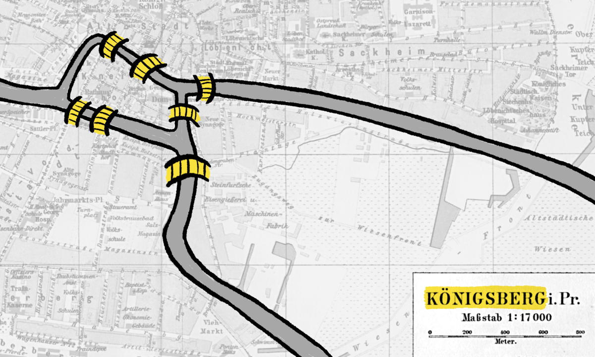
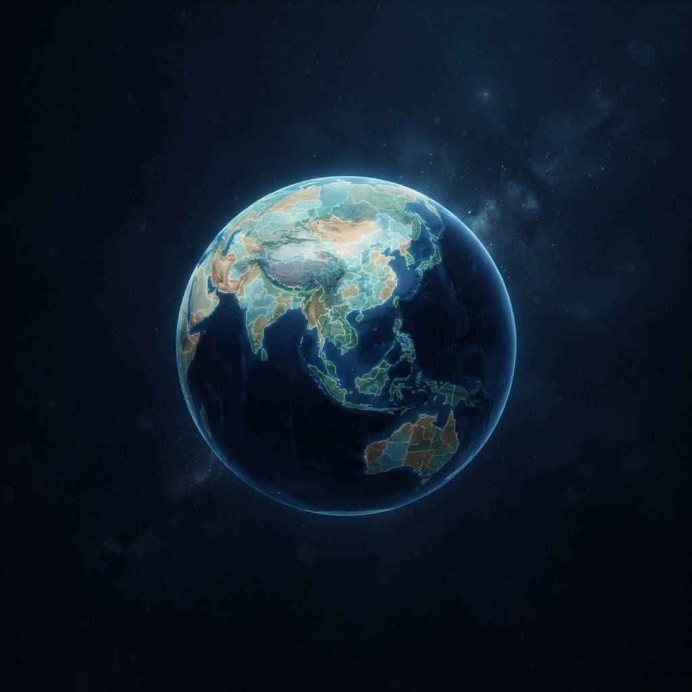
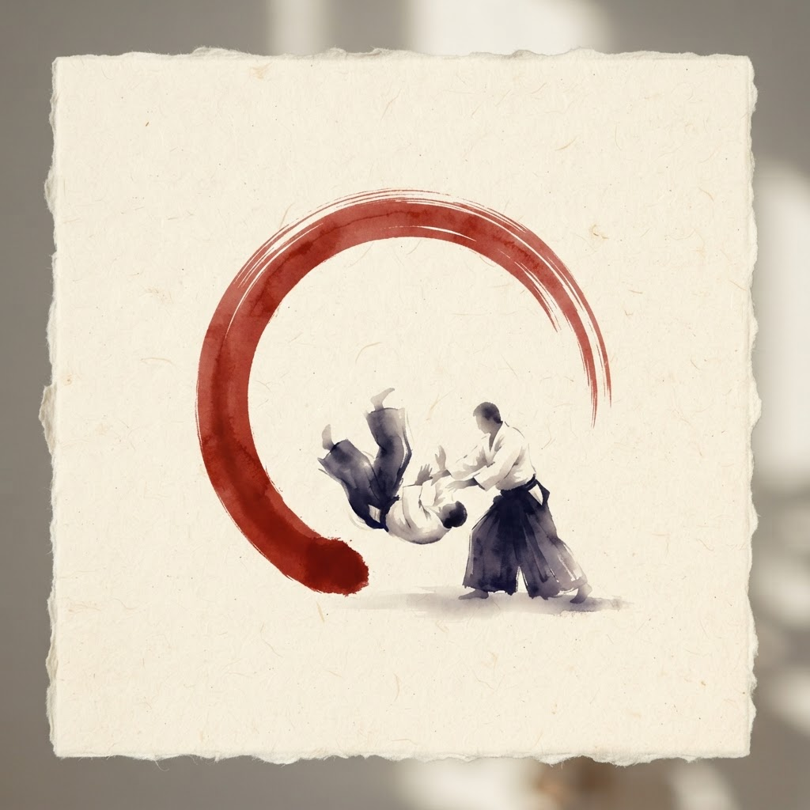

Mathematics · Reference External
Four Color Theorem
The companion site with the full background, history, and proof narrative behind the four-coloring of planar maps.
Visit four-color-theorem.comStefanutti experimental homepage
Pick where to dive in.

The companion site with the full background, history, and proof narrative behind the four-coloring of planar maps.
Visit four-color-theorem.com
Watch a cubic planar map grow, region by region, across a globe — a visual proof of the invariant behind the Four Color Theorem.
Open the visualization
An interactive catalog of the techniques in the ProgettoAiki Dan exam syllabus, organized by category with reference videos.
Browse the techniques